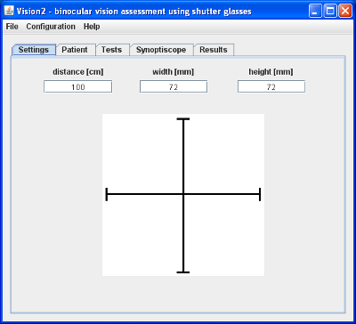

Tab "Settings" (shown on picture 1) serves as mean to inform about examination conditions. This information are used to calculate examination results. It's necessary to configure program after every launching because configuration isn't saved.
Majority of tab is occupy by cross image. Its heigh and width in milimeters must be write down in field "height [mm]" and "width [mm]". In field "distance [cm]" write down distance from monitor to patient eyes in centimeters.
